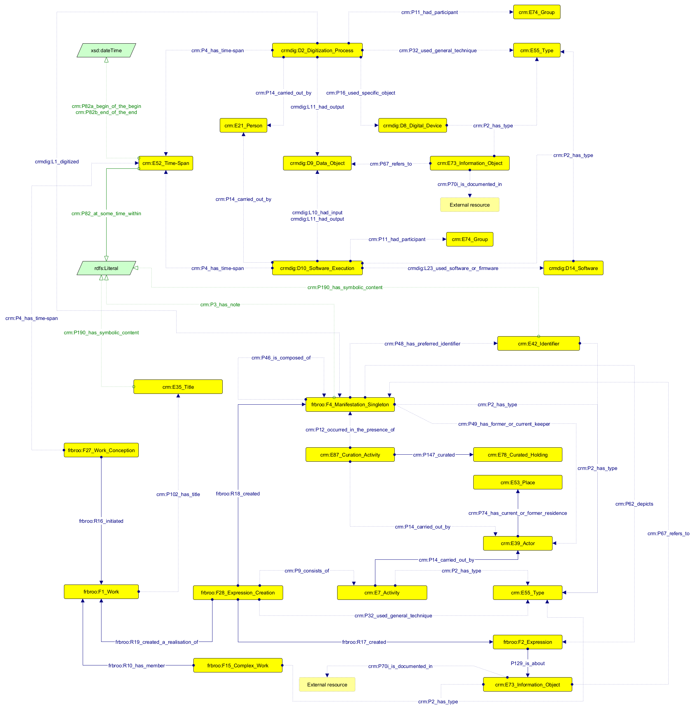
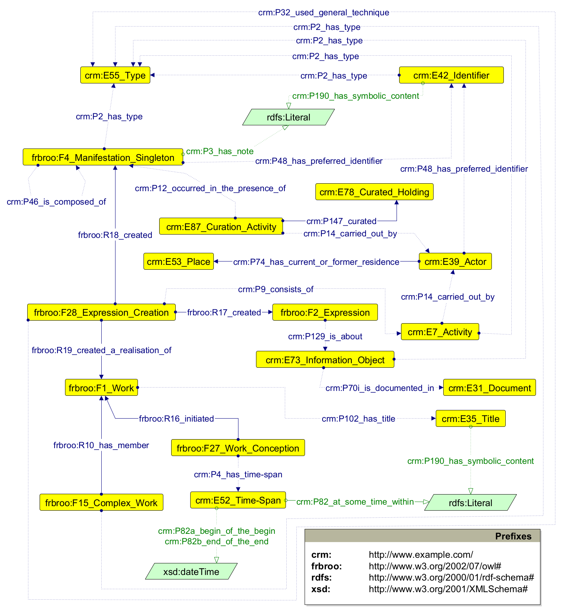
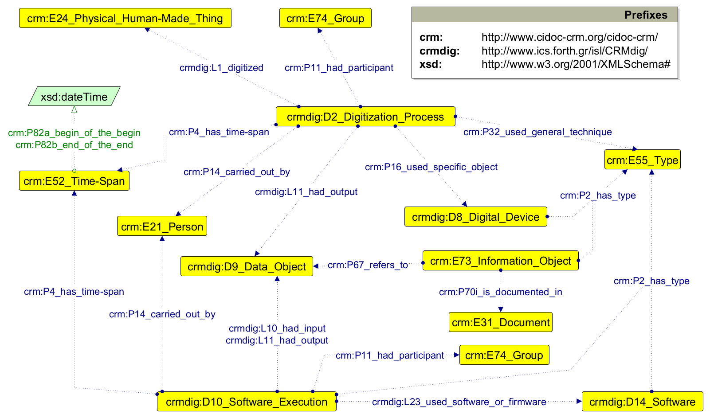

The Cultural Heritage Acquisition and Digitisation Application Profile (CHAD-AP, https://w3id.org/dharc/ontology/chad-ap) is a CIDOC CRM application profile implemented as an OWL ontology that can be logically split into two separate abstract modules: the Object Module (OM), dedicated to describing the CH objects, and the Process Module (PM), for describing the acquisition and digitisation process.
Both CHAD-AP and its documentation are living artefacts that have been drafted in the context of the Project CHANGES ("Cultural Heritage Active Innovation For Next-Gen Sustainable Society"), an EU-funded project that aims at increasing, at the Italian level, the curation, and management of cultural heritage artefacts in all forms, expanding the involvement of the general public, making more sustainable the exhibition potential, and including crucial social functions (accessibility, inclusiveness, critical thinking, participation, enjoyment, sustainability) into the cultural heritage environment.
Currently, CHAD-AP is able to describe the following entities:
The following figure contains a Graffoo diagram that provides an overview of the class and properties reused in CHAD-AP.

The current version of the application profile reuses a subset of classes and properties selected from the following models:
A full version of CHAD-AP is available at https://w3id.org/dharc/ontology/chad-ap.
The next subsections provide a quick overview of all the entities defined, some exemple of usage, and some of the queries that CHAD-AP can answer.
As shown in the diagram below, a Cultural Heritage (CH) object is described in CHAD-AP according to the Functional Requirements for Bibliographic Records (FRBR) data model, which uses several descriptive layers for its representation.

In particular, the Work (frbroo:F1_Work) represents the essence or conceptualization of the CH object. It begins with a conception event (frbroo:F27_Work_Conception) occurring within a specific time span (crm:E52_Time-Span), which can be expressed as either a precisely defined period with exact starting and ending date times (crm:P82a_begin_of_the_begin and crm:P82b_end_of_the_end) or a fuzzy label if its temporal extents are not precisely known (crm:P82_at_some_time_within). Each work is associated with a series of titles (crm:E35_Title), each classified according to a particular type (crm:E55_Type), which can be an original title (aat:300417204) or an exhibition title (aat:300417207). Furthermore, a Work can be part of a larger Work (frbroo:F15_Complex_Work), like a series of printed volumes, which is classified under a particular type (crm:E55_Type).
The Expression (frbroo:F2_Expression) is the realisation of a Work, and refers to the intellectual content of the object. It is generated through a creation event (frbroo:F28_Expression_Creation) made of smaller activities (crm:E7_Activity), each conducted by one or more agents (crm:E39_Actor) and characterised by a specific type (crm:E55_Type) that defines, implicitly, the role assumed by the agent for that activity. For example, if the agent is identified as the author of the Expression, the activity type is represented as writing (aat:300054698). Also, creation events employ various creation techniques (crm:E55_Type). For example, aat:300054196 is used to express drawing technique. An Expression can also be associated with one or more subjects defining its contents. In CHAD-AP, a generic concept is represented with the class crm:E73_Information_Object with the type aat:300404126 (i.e. subject) explicitly specified.
Finally, the Manifestation Singleton (frbroo:F4_Manifestation_Singleton) represents the physical instance of the CH object. It is accompanied with descriptive components like labels (expressed through the use of the property crm:P3_has_note), types (crm:E55_Type), and identifiers (crm:E42_Identifier). In some cases, it may be linked to a curation activity (crm:E87_Curation_Activity) carried out by a keeper (crm:E39_Actor) who manages a collection (crm:E78_Curated_Holding) the object belongs to, and that is located in a specific place (crm:E53_Place). Manifestations can consist of other Manifestations and may depict the Expression of another related object, such as a video displaying a manuscript or a tablet showing a picture of a specimen. In addition, Manifestations are associated with copyright or licensing statements (represented through the combination of crm:E73_Information_Object having type aat:300435434, i.e. copyright/licensing statement), linked with the document introducing the actual license or right statements through the property crm:P70i_is_documented_in. Whenever possible, instances of crm:E39_Actor and crm:E53_Place are also linked with existing authority records through the property crm:P48_has_preferred_identifier.
As shown in the diagram below, CHAD-AP also describes the entities for defining a 3D digitisation workflow as a sequence of activities classified according to two main categories.

On the one hand, we have the acquisition activity (crmdig:D2_Digitization_Process), which involves the digitisation of a CH object (crm:E24_Physical_Human-Made_Thing) to produce its digital CH object (crmdig:D9_Data_Object). Similarly to its physical counterpart, the digital CH object can be associated with copyright statements or licenses (crm:E73_Information_Object with aat:300435434 as its type). The acquisition occurs within a time span (crm:E52_Time-Span) with defined starting and ending date times, and engages various agents, including individuals (crm:E21_Person) and institutions (crm:E74_Group) responsible for the activity. During the acquisition, a series of techniques (crm:E55_Type) can be used, such as photogrammetry (aat:300053580) or structured light scanning (aat:300391312), along with tools (crmdig:D8_Digital_Device) like digital cameras (aat:300266792) and structured light scanners (aat:300429747).
On the other hand, we have a series of software activities (crmdig:D10_Software_Execution), each representing a specific stage or phase of digitisation workflow. Such stage is denoted by its type (crm:E55_Type), such as processing (aat:300054636), modelling (aat:300391447), and optimization (aat:300386427). It involves the manipulation of the digital CH object (crmdig:D9_Data_Object) produced previously as input and the production of a modified version of that digital CH object (crmdig:D9_Data_Object) as output. The activity also occurs within a defined time span (crm:E52_Time-Span) with precise start and end date times, engages various agents, including individuals (crm:E21_Person) and institutions (crm:E74_Group), and uses software as tools to produce its output (crmdig:D14_Software).
CHAD-AP can be used for modelling scenarios related to cultural heritage acquisition and digitisation processes. In the following subsections we introduce some of them, and we accompany them with exemplar instantiations.
The prefixes that are used in all the examples provided below are defined as follows:
@prefix aat: <http://vocab.getty.edu/page/aat/> .
@prefix ex: <https://w3id.org/dharc/ontology/chad-ap/data/example/> .
@prefix crm: <http://www.cidoc-crm.org/cidoc-crm/> .
@prefix crmdig: <http://www.ics.forth.gr/isl/CRMdig/> .
@prefix frbroo: <http://iflastandards.info/ns/fr/frbr/frbroo/> .
@prefix owl: <http://www.w3.org/2002/07/owl#> .
@prefix rdf: <http://www.w3.org/1999/02/22-rdf-syntax-ns#> .
@prefix xml: <http://www.w3.org/XML/1998/namespace> .
@prefix xsd: <http://www.w3.org/2001/XMLSchema#> .
@prefix rdfs: <http://www.w3.org/2000/01/rdf-schema#> .
The creation event 01-exp-creation-00 created the CH object 01-exp ('Amerigo Vespucci sveglia l’America') through the technique engraving. The creation event consists of three smaller creation events:
01-exp-creation-01, carried out by Jan van der Straet (ULAN:500011304), in the role of illustration;01-exp-creation-02, carried out by Philip Galle, Theodor Galle and Jan Collaert, in the role of engraving process;01-exp-creation-03, carried out by Luigi Alamanni (ULAN:500714480), in the role of commission.The creation event 35-exp-creation-00 created the CH object 35-exp ('De plantis epitome utilissima') through the technique watercolor. The creation event consists of two smaller creation events:
35-exp-creation-01, carried out by Pietro Andrea Mattioli (VIAF:61549376), in the role of translation;35-exp-creation-02, carried out by Pietro Andrea Mattioli (VIAF:61549376), in the role of illustration.The creation event 24-exp-creation-00 created the CH object 24-exp ('Panthera onca (Linnaeus, 1758)') through the technique taxidermy. The creation event consists of two smaller creation events:
24-exp-creation-01, carried out by Carl Linnaeus (VIAF:34594730), in the role of discovery;24-exp-creation-02, carried out by Naturaliter, in the role of museum preparation.ex:L1-exp-creation-00 a frbroo:F28_Expression_Creation ;
frbroo:R17_created ex:L1-exp ;
crm:P32_used_general_technique aat:300053225 ;
crm:P9_consists_of ex:L1-exp-creation-01 ,
ex:L1-exp-creation-02 ,
ex:L1-exp-creation-03 .
ex:L1-exp-creation-01 a crm:E7_Activity ;
crm:P2_has_type aat:300054200 ;
crm:P14_carried_out_by ex:jan-van-der-straet .
ex:L1-exp-creation-02 a crm:E7_Activity ;
crm:P2_has_type aat:300053225 ;
crm:P14_carried_out_by ex:philip-galle ,
ex:theodor-galle ,
ex:jan-collaert .
ex:L1-exp-creation-03 a crm:E7_Activity ;
crm:P2_has_type aat:300417639 ;
crm:P14_carried_out_by ex:luigi-alamanni .
ex:L1-exp a frbroo:F2_Expression .
ex:jan-van-der-straet a crm:E39_Actor ;
crm:P48_has_preferred_identifier <http://vocab.getty.edu/page/ulan/500011304> .
ex:philip-galle a crm:E39_Actor .
ex:theodor-galle a crm:E39_Actor .
ex:jan-collaert a crm:E39_Actor .
ex:luigi-alamanni a crm:E39_Actor .
ex:35-exp-creation-00 a frbroo:F28_Expression_Creation ;
crm:P32_used_general_technique aat:300015045 ;
frbroo:R17_created ex:35-exp ;
crm:P9_consists_of ex:35-exp-creation-01 ,
ex:35-exp-creation-02 .
ex:35-exp a frbroo:F2_Expression .
ex:35-exp-creation-01 a crm:E7_Activity ;
crm:P2_has_type aat:300069831 ;
crm:P14_carried_out_by ex:pietro-andrea-mattioli .
ex:35-exp-creation-02 a crm:E7_Activity ;
crm:P2_has_type aat:300054200 ;
crm:P14_carried_out_by ex:pietro-andrea-mattioli .
ex:pietro-andrea-mattioli a crm:E39_Actor ;
crm:P48_has_preferred_identifier <http://viaf.org/viaf/61549376> .
ex:24-exp-creation-00 a frbroo:F28_Expression_Creation ;
frbroo:R17_created ex:24-exp ;
crm:P32_used_general_technique aat:300053628 ;
crm:P9_consists_of ex:24-exp-creation-01 ,
ex:24-exp-creation-02 .
ex:24-exp a frbroo:F2_Expression .
ex:24-exp-creation-01 a crm:E7_Activity ;
crm:P2_has_type aat:300404386 ;
crm:P14_carried_out_by ex:carl-linnaeus .
ex:24-exp-creation-02 a crm:E7_Activity ;
crm:P2_has_type aat:300077565 ;
crm:P14_carried_out_by ex:naturaliter .
ex:carl-linnaeus a crm:E39_Actor ;
crm:P48_has_preferred_identifier <http://viaf.org/viaf/34594730> .
ex:naturaliter a crm:E39_Actor .
The creation event 01-exp-creation-00 created the CH object 01-man ('Amerigo Vespucci sveglia l’America'). The CH object has the identifier '01' with type equal to project id. Its type is print. Its descriptive label is 'Amerigo Vespucci sveglia l’America
Amerigo Vespucci awakens a sleeping America
In
Jan van del Straet (Stradano), Nova Reperta, c. 1589 – c.1593, Antwerp
Amsterdam, Rijksmuseum'
The creation event 05-exp-creation-00 created the CH object 05-exp ('De Historia Animalium lib. 9'). The CH object has the identifiers:
project idvolume numbershelf mark
Its type is printed volume. Its descriptive label is 'Aristoteles
De Historia Animalium lib. 9
Venezia, Girolamo Scoto, 1545
BUB, A.V.GG.VII.28'The creation event 45-exp-creation-00 created the CH object 45-exp ('Dryas octopetala L.'). The CH object has the identifiers:
project idvolume numbershelf mark
Its type is specimen. Its descriptive label is 'Dryas octopetala L.
Camedrio alpino
Mountain avens
Erbario Aldrovandi, vol.13, carta 77
sec. XVI 16th century
Bologna, Orto Botanico ed Erbario, Sistema Museale di Ateneo'ex:L1-exp-creation-00 a frbroo:F28_Expression_Creation ;
frbroo:R18_created ex:L1-man .
ex:L1-man a frbroo:F4_Manifestation_Singleton ;
crm:P48_has_preferred_identifier ex:L1-identifier-00 ;
crm:P2_has_type aat:300041273 ;
crm:P3_has_note "Amerigo Vespucci sveglia l'America Amerigo Vespucci awakens a sleeping America In Jan van del Straet (Stradano), Nova Reperta, c. 1589 - c.1593, Antwerp Amsterdam, Rijksmuseum"^^rdfs:Literal .
ex:L1-identifier-00 a crm:E42_Identifier ;
crm:P190_has_symbolic_content "L1"^^rdfs:Literal ;
crm:P2_has_type aat:300312355 .
ex:05-exp-creation-00 a frbroo:F28_Expression_Creation ;
frbroo:R18_created ex:05-man .
ex:05-man a frbroo:F4_Manifestation_Singleton ;
crm:P48_has_preferred_identifier ex:05-identifier-00 ,
ex:05-identifier-01 ,
ex:05-identifier-02 ;
crm:P2_has_type aat:300265632 ;
crm:P3_has_note "Aristoteles De Historia Animalium lib. 9 Venezia, Girolamo Scoto, 1545 BUB, A.V.GG.VII.28"^^rdfs:Literal .
ex:05-identifier-00 a crm:E42_Identifier ;
crm:P190_has_symbolic_content "05"^^rdfs:Literal ;
crm:P2_has_type aat:300312355 .
ex:05-identifier-01 a crm:E42_Identifier ;
crm:P190_has_symbolic_content "9"^^rdfs:Literal ;
crm:P2_has_type aat:300445021 .
ex:05-identifier-02 a crm:E42_Identifier ;
crm:P190_has_symbolic_content "A.V.GG.VII.28"^^rdfs:Literal ;
crm:P2_has_type aat:300404704 .
ex:45-exp-creation-00 a frbroo:F28_Expression_Creation ;
frbroo:R18_created ex:45-man .
ex:45-man a frbroo:F4_Manifestation_Singleton ;
crm:P48_has_preferred_identifier ex:45-identifier-00 ,
ex:45-identifier-01 ,
ex:45-identifier-02 ;
crm:P2_has_type aat:300235576 ;
crm:P3_has_note "Dryas octopetala L. Camedrio alpino Mountain avens Erbario Aldrovandi, vol.13, carta 77 sec. XVI 16th century Bologna, Orto Botanico ed Erbario, Sistema Museale di Ateneo"^^rdfs:Literal .
ex:45-identifier-00 a crm:E42_Identifier ;
crm:P190_has_symbolic_content "45"^^rdfs:Literal ;
crm:P2_has_type aat:300312355 .
ex:45-identifier-01 a crm:E42_Identifier ;
crm:P190_has_symbolic_content "13"^^rdfs:Literal ;
crm:P2_has_type aat:300445021 .
ex:45-identifier-02 a crm:E42_Identifier ;
crm:P190_has_symbolic_content "Erbario Aldrovandi, vol.13, carta 77"^^rdfs:Literal ;
crm:P2_has_type aat:300404704 .
A curation event L1-curation - carried out by Rijksmuseum (located in Amsterdam) - curated the collection Nova Reperta for the CH object L1-man.
A curation event 1-curation - carried out by Sistema museale di Ateneo (located in Bologna) - curated the collection Collezione di Zoologia for the CH object 1-man.
A curation event 14-curation - carried out by Sistema museale di Ateneo (located in Bologna) - curated the collection Collezione di Anatomia comparata for the CH object 14-man.
ex:L1-curation a crm:E87_Curation_Activity ;
crm:P147_curated ex:nova-reperta ;
crm:P14_carried_out_by ex:rijksmuseum ;
crm:P12_occurred_in_the_presence_of ex:L1-man .
ex:L1-man a frbroo:F4_Manifestation_Singleton ;
crm:P74_has_current_or_former_residence ex:rijksmuseum .
ex:nova-reperta a crm:E78_Curated_Holding .
ex:rijksmuseum a crm:E39_Actor ;
crm:P74_has_current_or_former_residence ex:amsterdam .
ex:amsterdam a crm:E53_Place .
ex:1-curation a crm:E87_Curation_Activity ;
crm:P147_curated ex:collezione-di-zoologia ;
crm:P14_carried_out_by ex:sistema-museale-di-ateneo ;
crm:P12_occurred_in_the_presence_of ex:1-man .
ex:1-man a frbroo:F4_Manifestation_Singleton ;
crm:P74_has_current_or_former_residence ex:sistema-museale-di-ateneo .
ex:collezione-di-zoologia a crm:E78_Curated_Holding .
ex:sistema-museale-di-ateneo a crm:E39_Actor ;
crm:P74_has_current_or_former_residence ex:bologna .
ex:bologna a crm:E53_Place .
ex:14-curation a crm:E87_Curation_Activity ;
crm:P147_curated ex:collezione-di-anatomia-comparata ;
crm:P14_carried_out_by ex:sistema-museale-di-ateneo ;
crm:P12_occurred_in_the_presence_of ex:14-man .
ex:14-man a frbroo:F4_Manifestation_Singleton ;
crm:P74_has_current_or_former_residence ex:sistema-museale-di-ateneo .
ex:collezione-di-anatomia-comparata a crm:E78_Curated_Holding .
A conception event L1-work-conception initiated the CH object L1-work ('Amerigo Vespucci sveglia l’America') in the time interval 1589-1593, which starts in 1589-01-01 and ends in 1593-12-31.
A conception event 1-work-conception initiated the CH object 1-work ('Carta nautica') in the time interval 1482, which starts in 1482-01-01 and ends in 1482-12-31.
A conception event 26-work-conception initiated the CH object 26-work ('Chrysanthemi') in the time interval 1500-1599, which starts in 1500-01-01 and ends in 1599-12-31.
ex:L1-work-conception a frbroo:F27_Work_Conception ;
frbroo:R16_initiated ex:L1-work ;
crm:P4_has_time-span ex:1589-1593 .
ex:1589-1593 a crm:E52_Time-Span ;
crm:P82a_begin_of_the_begin "1589-01-01T00:00:00"^^xsd:dateTime ;
crm:P82b_end_of_the_end "1593-12-31T23:59:59"^^xsd:dateTime .
ex:L1-work a frbroo:F1_Work .
ex:1-work-conception a frbroo:F27_Work_Conception ;
frbroo:R16_initiated ex:1-work ;
crm:P4_has_time-span ex:1482 .
ex:1482 a crm:E52_Time-Span ;
crm:P82a_begin_of_the_begin "1482-01-01T00:00:00"^^xsd:dateTime ;
crm:P82b_end_of_the_end "1482-12-31T23:59:59"^^xsd:dateTime .
ex:1-work a frbroo:F1_Work .
ex:26-work-conception a frbroo:F27_Work_Conception ;
frbroo:R16_initiated ex:26-work ;
crm:P4_has_time-span ex:1500-1599 .
ex:1500-1599 a crm:E52_Time-Span ;
crm:P82a_begin_of_the_begin "1500-01-01T00:00:00"^^xsd:dateTime ;
crm:P82b_end_of_the_end "1599-12-31T23:59:59"^^xsd:dateTime .
ex:26-work a frbroo:F1_Work .
The creation event L1-exp-creation created the work L1-work, the expression L1-exp and the manifestation L1-man.
L1-work has two titles: the original title L1-work-title-01 ('Amerigo Vespucci sveglia l'America'), and the exhibition title L1-work-title-02 ('Amerigo Vespucci sveglia l'America'). It is member of the parent work Nova Reperta, which has print series as its type.
L1-exp is about the following subjects: amerigo vespucci, astrolabio, vessillo croce del sud, formichiere, bradipo, tapiro, and gruppo di cannibali.
The creation event 1-exp-creation created the work 1-work, the expression 1-exp and the manifestation 1-man.
1-work has two titles: the original title 1-work-title-01 ('Carta nautica'), and the exhibition title 1-work-title-02 ('Carta nautica').
1-exp is about the following subjects: europa, africa, asia, and mar mediterraneo.
The creation event 7-exp-creation created the work 7-work, the expression 7-exp and the manifestation 7-man.
7-work has two titles: the original title 7-work-title-01 ('Profilo incompleto delle coste del continente americano'), and the exhibition title 7-work-title-02 ('Profilo incompleto delle coste del continente americano'). It is member of the parent work Atlante Nautico, which has marine chart as its type.
7-exp is about the following subjects: america and europa.
ex:L1-exp-creation a frbroo:F28_Expression_Creation ;
frbroo:R19_created_a_realisation_of ex:L1-work ;
frbroo:R17_created ex:L1-exp ;
frbroo:R18_created ex:L1-man .
ex:L1-work a frbroo:F1_Work ;
crm:P102_has_title ex:L1-work-title-01 ,
ex:L1-work-title-02 .
ex:L1-work-title-01 a crm:E35_Title ;
crm:P2_has_type aat:300417204 ;
crm:P190_has_symbolic_content "Amerigo Vespucci sveglia l'America"@it .
ex:L1-work-title-02 a crm:E35_Title ;
crm:P2_has_type aat:300417207 ;
crm:P190_has_symbolic_content "Amerigo Vespucci sveglia l'America"@en .
ex:L1-exp a frbroo:F2_Expression ;
crm:P129_is_about ex:sub-amerigo-vespucci ,
ex:sub-astrolabio ,
ex:sub-vessillo-croce-del-sud ,
ex:sub-formichiere ,
ex:sub-bradipo ,
ex:sub-tapiro ,
ex:sub-gruppo-di-cannibali .
ex:L1-man a frbroo:F4_Manifestation_Singleton .
ex:L1-man-license a crm:E73_Information_Object ;
crm:P2_has_type aat:300435434 ;
crm:P67_refers_to ex:L1-man ;
crm:P70i_is_documented_in <http://rightsstatements.org/vocab/InC/1.0/> .
ex:1-man-license a crm:E73_Information_Object ;
crm:P2_has_type aat:300435434 ;
crm:P67_refers_to ex:1-man ;
crm:P70i_is_documented_in <http://rightsstatements.org/vocab/InC/1.0/> .
ex:7-man-license a crm:E73_Information_Object ;
crm:P2_has_type aat:300435434 ;
crm:P67_refers_to ex:7-man ;
crm:P70i_is_documented_in <http://rightsstatements.org/vocab/InC/1.0/> .
ex:PTa-man-license a crm:E73_Information_Object ;
crm:P2_has_type aat:300435434 ;
crm:P67_refers_to ex:PTa-man ;
crm:P70i_is_documented_in <http://rightsstatements.org/vocab/InC/1.0/> .
ex:PTa-1-man-license a crm:E73_Information_Object ;
crm:P2_has_type aat:300435434 ;
crm:P67_refers_to ex:PTa-1-man ;
crm:P70i_is_documented_in <http://rightsstatements.org/vocab/InC/1.0/> .
ex:PTa-2-man-license a crm:E73_Information_Object ;
crm:P2_has_type aat:300435434 ;
crm:P67_refers_to ex:PTa-2-man ;
crm:P70i_is_documented_in <http://rightsstatements.org/vocab/InC/1.0/> .
ex:PTa-3-man-license a crm:E73_Information_Object ;
crm:P2_has_type aat:300435434 ;
crm:P67_refers_to ex:PTa-3-man ;
crm:P70i_is_documented_in <http://rightsstatements.org/vocab/InC/1.0/> .
ex:nova-reperta a frbroo:F15_Complex_Work ;
frbroo:R10_has_member ex:L1-work ;
crm:P2_has_type aat:300189634 .
ex:sub-amerigo-vespucci a crm:E73_Information_Object ;
crm:P2_has_type aat:300404126 .
ex:sub-astrolabio a crm:E73_Information_Object ;
crm:P2_has_type aat:300404126 .
ex:sub-vessillo-croce-del-sud a crm:E73_Information_Object ;
crm:P2_has_type aat:300404126 .
ex:sub-formichiere a crm:E73_Information_Object ;
crm:P2_has_type aat:300404126 .
ex:sub-bradipo a crm:E73_Information_Object ;
crm:P2_has_type aat:300404126 .
ex:sub-tapiro a crm:E73_Information_Object ;
crm:P2_has_type aat:300404126 .
ex:sub-gruppo-di-cannibali a crm:E73_Information_Object ;
crm:P2_has_type aat:300404126 .
ex:1-exp-creation a frbroo:F28_Expression_Creation ;
frbroo:R19_created_a_realisation_of ex:1-work ;
frbroo:R17_created ex:1-exp ;
frbroo:R18_created ex:1-man .
ex:1-work a frbroo:F1_Work ;
crm:P102_has_title ex:1-work-title-01 ,
ex:1-work-title-02 .
ex:1-work-title-01 a crm:E35_Title ;
crm:P2_has_type aat:300417204 ;
crm:P190_has_symbolic_content "Carta nautica"@it .
ex:1-work-title-02 a crm:E35_Title ;
crm:P2_has_type aat:300417207 ;
crm:P190_has_symbolic_content "Carta nautica"@it .
ex:1-exp a frbroo:F2_Expression ;
crm:P129_is_about ex:sub-europa ,
ex:sub-africa ,
ex:sub-asia ,
ex:sub-mar-mediterraneo .
ex:1-man a frbroo:F4_Manifestation_Singleton .
ex:sub-europa a crm:E73_Information_Object ;
crm:P2_has_type aat:300404126 .
ex:sub-africa a crm:E73_Information_Object ;
crm:P2_has_type aat:300404126 .
ex:sub-asia a crm:E73_Information_Object ;
crm:P2_has_type aat:300404126 .
ex:sub-mar-mediterraneo a crm:E73_Information_Object ;
crm:P2_has_type aat:300404126 .
ex:7-exp-creation a frbroo:F28_Expression_Creation ;
frbroo:R19_created_a_realisation_of ex:7-work ;
frbroo:R17_created ex:7-exp ;
frbroo:R18_created ex:7-man .
ex:7-work a frbroo:F1_Work ;
crm:P102_has_title ex:7-work-title-01 ,
ex:7-work-title-02 .
ex:7-work-title-01 a crm:E35_Title ;
crm:P2_has_type aat:300417204 ;
crm:P190_has_symbolic_content "Profilo incompleto delle coste del continente americano"@it .
ex:7-work-title-02 a crm:E35_Title ;
crm:P2_has_type aat:300417207 ;
crm:P190_has_symbolic_content "Profilo incompleto delle coste del continente americano"@it .
ex:7-exp a frbroo:F2_Expression ;
crm:P129_is_about ex:sub-america ,
ex:sub-europa .
ex:7-man a frbroo:F4_Manifestation_Singleton .
ex:atlante-nautico a frbroo:F15_Complex_Work ;
frbroo:R10_has_member ex:7-work ;
crm:P2_has_type aat:300028309 .
ex:sub-america a crm:E73_Information_Object ;
crm:P2_has_type aat:300404126 .
ex:PTa-exp-creation a frbroo:F28_Expression_Creation ;
frbroo:R19_created_a_realisation_of ex:PTa-work ;
frbroo:R17_created ex:PTa-exp ;
frbroo:R18_created ex:PTa-man .
ex:PTa-work a frbroo:F1_Work .
ex:PTa-exp a frbroo:F2_Expression .
ex:PTa-man a frbroo:F4_Manifestation_Singleton ;
crm:P46_is_composed_of ex:PTa-1-man ,
ex:PTa-2-man .
ex:PTa-1-exp-creation a frbroo:F28_Expression_Creation ;
frbroo:R19_created_a_realisation_of ex:PTa-1-work ;
frbroo:R17_created ex:PTa-1-exp ;
frbroo:R18_created ex:PTa-1-man .
ex:PTa-1-work a frbroo:F1_Work .
ex:PTa-1-exp a frbroo:F2_Expression .
ex:PTa-1-man a frbroo:F4_Manifestation_Singleton .
ex:PTa-2-exp-creation a frbroo:F28_Expression_Creation ;
frbroo:R19_created_a_realisation_of ex:PTa-2-work ;
frbroo:R17_created ex:PTa-2-exp ;
frbroo:R18_created ex:PTa-2-man .
ex:PTa-2-work a frbroo:F1_Work .
ex:PTa-2-exp a frbroo:F2_Expression .
ex:PTa-2-man a frbroo:F4_Manifestation_Singleton .
ex:PTa-3-exp-creation a frbroo:F28_Expression_Creation ;
frbroo:R19_created_a_realisation_of ex:PTa-3-work ;
frbroo:R17_created ex:PTa-3-exp ;
frbroo:R18_created ex:PTa-3-man .
ex:PTa-3-work a frbroo:F1_Work .
ex:PTa-3-exp a frbroo:F2_Expression .
ex:PTa-3-man a frbroo:F4_Manifestation_Singleton ;
crm:P62_depicts ex:PTa-man .
The object 32 has been digitally acquired on the 8th of May 2023. The digitization process produced a 3D model 32-output-acq as an output, provided with a 'CC BY-NC 4.0' license, which will be used as an input by the software activity 32-proc.
ex:32 a crm:E24_Physical_Human-Made_Thing .
ex:32-acq a crmdig:D2_Digitization_Process ;
crmdig:L1_digitized ex:32 ;
crmdig:L11_had_output ex:32-acq-output ;
crm:P4_has_time-span ex:32-acq-timespan .
ex:32-proc a crmdig:D10_Software_Execution ;
crmdig:L10_had_input ex:32-acq-output ;
crm:P4_has_time-span ex:32-proc-timespan .
ex:32-acq-output a crmdig:D9_Data_Object .
ex:32-acq-output-license a crm:E73_Information_Object ;
crm:P2_has_type aat:300435434 ;
crm:P67_refers_to ex:32-acq-output ;
crm:P70i_is_documented_in <https://creativecommons.org/licenses/by-nc/4.0/> .
ex:32-acq-timespan a crm:E52_Time-Span ;
crm:P82a_begin_of_the_begin "2023-05-08T00:00:00Z"^^xsd:dateTime ;
crm:P82b_end_of_the_end "2023-05-08T23:59:59Z"^^xsd:dateTime .
ex:32-proc-timespan a crm:E52_Time-Span ;
crm:P82a_begin_of_the_begin "2023-05-10T00:00:00Z"^^xsd:dateTime ;
crm:P82b_end_of_the_end "2023-05-10T23:59:59Z"^^xsd:dateTime .
The digital object 15-proc-output has been generated as an output during the processing activity carried out by the person Federica Collina, who belongs to the institution UNIBO DBC. The processing activity used the digital object 15-acq-output (produced by the digitization process 15-acq) as an input.
ex:15 a crm:E24_Physical_Human-Made_Thing .
ex:15-acq a crmdig:D2_Digitization_Process ;
crmdig:L11_had_output ex:15-acq-output .
ex:15-proc a crmdig:D10_Software_Execution ;
crm:P2_has_type aat:300054636 ;
crmdig:L10_had_input ex:15-acq-output ;
crmdig:L11_had_output ex:15-proc-output ;
crm:P11_had_participant ex:unibo-dbc ;
crm:P14_carried_out_by ex:federica-collina .
ex:15-acq-output a crmdig:D9_Data_Object .
ex:15-proc-output a crmdig:D9_Data_Object .
ex:federica-collina a crm:E21_Person .
ex:unibo-dbc a crm:E74_Group .
The physical object 15 has been digitally acquired through the structured light scanning technique and the scanner spider tool. The digitization process produced a 3D model 15-acq-output as an output.
ex:15 a crm:E24_Physical_Human-Made_Thing .
ex:15-acq a crmdig:D2_Digitization_Process ;
crmdig:L1_digitized ex:15 ;
crmdig:L11_had_output ex:15-acq-output ;
crm:P32_used_general_technique aat:300391312 ;
crm:P16_used_specific_object ex:artec-spider .
ex:15-proc a crmdig:D10_Software_Execution ;
crm:P2_has_type aat:300054636 ;
crmdig:L10_had_input ex:15-acq-output ;
crmdig:L11_had_output ex:15-proc-output ;
crmdig:L23_used_software_or_firmware ex:artec-studio-14 .
ex:15-acq-output a crmdig:D9_Data_Object .
ex:15-proc-output a crmdig:D9_Data_Object .
ex:artec-spider a crmdig:D8_Digital_Device ;
crm:P2_has_type aat:300429747 .
ex:artec-studio-14 a crmdig:D14_Software ;
crm:P2_has_type aat:300426696 .
CHAD-AP can be used for answering several questions related to the acquisition and digitisation of cultural heritage objects. In the following subsections we introduce some of them, and we accompany them with exemplar SPARQL queries.
The prefixes that are used in all the SPARQL queries provided below are defined as follows:
PREFIX aat: <http://vocab.getty.edu/page/aat/>
PREFIX crm: <http://www.cidoc-crm.org/cidoc-crm/>
PREFIX crmdig: <http://www.ics.forth.gr/isl/CRMdig/>
PREFIX ex: <https://w3id.org/dharc/ontology/chad-ap/data/example/>
PREFIX frbroo: <http://iflastandards.info/ns/fr/frbr/frbroo/>
What are the CH objects whose creation involved some author?
SELECT ?resource ?agent
WHERE {
?creation_event a frbroo:F28_Expression_Creation ;
frbroo:R17_created ?resource ;
crm:P9_consists_of ?activity .
?activity crm:P2_has_type aat:300054698 ;
crm:P14_carried_out_by ?agent .
}
What are the agents and the types of activities they carried out to contribute to the creation of 32-exp?
SELECT ?agent ?type
WHERE {
?creation_event a frbroo:F28_Expression_Creation ;
frbroo:R17_created ex:32-exp ;
crm:P9_consists_of ?activity .
?activity crm:P2_has_type ?type ;
crm:P14_carried_out_by ?agent .
}
What are the agents involved in the creation of the CH objects that have been created through the drawing technique? What are the types of the activities they carried out?
SELECT ?resource ?agent ?type
WHERE {
?creation_event a frbroo:F28_Expression_Creation ;
crm:P32_used_general_technique aat:300033973 ;
frbroo:R17_created ?resource ;
crm:P9_consists_of ?activity .
?activity crm:P2_has_type ?type ;
crm:P14_carried_out_by ?agent .
}
What are the identifiers of the manuscript? What are their types?
SELECT ?resource ?identifier_text ?type
WHERE {
?resource a frbroo:F4_Manifestation_Singleton ;
crm:P2_has_type aat:300028569 ;
crm:P48_has_preferred_identifier ?identifier .
?identifier crm:P2_has_type ?type ;
crm:P190_has_symbolic_content ?identifier_text.
}
What is the shelf mark of the CH object with the project ID '32'?
SELECT ?identifier_text
WHERE {
?resource a frbroo:F4_Manifestation_Singleton ;
crm:P48_has_preferred_identifier ?identifier1 ,
?identifier2 .
?identifier1 crm:P2_has_type aat:300312355 ;
crm:P190_has_symbolic_content "32"^^rdfs:Literal .
?identifier2 crm:P2_has_type aat:300404704 ;
crm:P190_has_symbolic_content ?identifier_text.
}
What are the descriptive labels of the CH objects that either have shelf marks or are prints?
SELECT ?resource ?label
WHERE {
?resource a frbroo:F4_Manifestation_Singleton ;
crm:P48_has_preferred_identifier ?identifier ;
crm:P2_has_type ?type ;
crm:P3_has_note ?label .
?identifier crm:P2_has_type ?id_type .
FILTER(?type = aat:300041273 || ?id_type = aat:300404704)
}
What are the CH objects whose collections have been curated by agents located in Bologna?
SELECT ?resource ?agent
WHERE {
?curation a crm:E87_Curation_Activity ;
crm:P14_carried_out_by ?agent ;
crm:P12_occurred_in_the_presence_of ?resource .
?agent crm:P74_has_current_or_former_residence ex:bologna .
}
What are the CH objects and the time spans of their conception events?
SELECT ?resource ?time_interval
WHERE {
?conception_event a frbroo:F27_Work_Conception ;
frbroo:R16_initiated ?resource ;
crm:P4_has_time-span ?time_interval .
}
What are the titles of the work 32-work? What are their types?
SELECT ?title ?type ?content
WHERE {
?creation a frbroo:F28_Expression_Creation ;
frbroo:R19_created_a_realisation_of ex:32-work .
ex:32-work crm:P102_has_title ?title .
?title crm:P2_has_type ?type ;
crm:P190_has_symbolic_content ?content .
}
What are the parent works of the works that have either 'ermafrodita' as their subject?
SELECT ?parent ?work ?subject
WHERE {
?creation a frbroo:F28_Expression_Creation ;
frbroo:R19_created_a_realisation_of ?work ;
frbroo:R17_created ?expression .
?parent a frbroo:F15_Complex_Work ;
frbroo:R10_has_member ?work .
?expression a frbroo:F2_Expression ;
crm:P129_is_about ex:sub-ermafrodita .
}
Which license statements are assigned to the manifestations?
SELECT ?manifestation ?license_link
WHERE {
?license crm:P67_refers_to ?manifestation ;
crm:P2_has_type aat:300435434 ;
crm:P70i_is_documented_in ?license_link .
}
What is the cultural object digitized and the digital object produced by the digitization process? What is the latter's license?
SELECT ?input ?output ?license_link
WHERE {
?activity a crmdig:D2_Digitization_Process ;
crmdig:L1_digitized ?input ;
crmdig:L11_had_output ?output .
?license crm:P2_has_type aat:300435434 ;
crm:P67_refers_to ?output ;
crm:P70i_is_documented_in ?license_link .
}
What are the starting and ending date times in which the digitization process and the following software activity occurred?
SELECT ?activity ?start ?end
WHERE {
?activity a crmdig:D2_Digitization_Process;
crm:P4_has_time-span ?timespan .
?timespan crm:P82a_begin_of_the_begin ?start ;
crm:P82b_end_of_the_end ?end .
}
What are the digitization process, its output, the processing activity and its output?
SELECT ?digitization ?input ?activity ?output
WHERE {
?activity a crmdig:D10_Software_Execution ;
crm:P2_has_type aat:300054636 ;
crmdig:L10_had_input ?input ;
crmdig:L11_had_output ?output .
?digitization crmdig:L11_had_output ?input .
}
What are the people and institutions who either carried out or were participants in the processing activity?
SELECT ?person ?institution
WHERE {
?activity a crmdig:D10_Software_Execution ;
crm:P2_has_type aat:300054636 ;
crm:P14_carried_out_by ?person ;
crm:P11_had_participant ?institution .
}
What are the techniques used in digitization processes?
SELECT ?technique ?activity
WHERE {
?activity a crmdig:D2_Digitization_Process ;
crm:P32_used_general_technique ?technique .
}
What are the tools and their types used in processing activities?
SELECT ?tool ?type
WHERE {
?activity a crmdig:D10_Software_Execution ;
crm:P2_has_type aat:300054636 ;
crmdig:L23_used_software_or_firmware ?tool .
?tool a crmdig:D14_Software ;
crm:P2_has_type ?type .
}